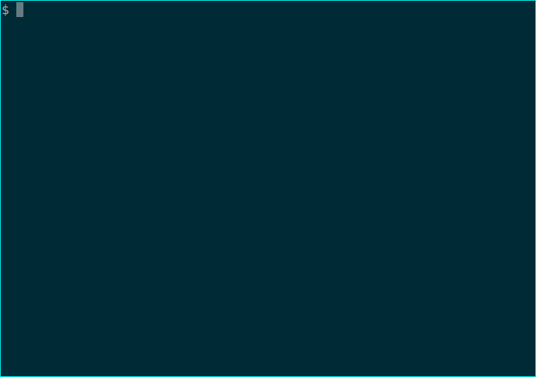

What I did on my summer vacation...
August 14, 2018
What I did
This year, I took part in Google Summer of Code, with a project to attempt to finish bringing Cabal's Nix-style local builds (the new- commands, at least for now) up to parity with the old stateful methodology of using cabal-install.
While I'm not sure that it covers every single use for legacy cabal out there, I did manage to bring in some exciting new-to-Cabal features on top of a whole heap of bug fixes and TODOs now done.
cabal new-install is done.
While the command existed before, it only worked to install executable from repository packages. I added support for the installation of local components and for the installation of libraries.
However, due to concerns about the somewhat surprising behavior of the only method GHC provides to enable library installation while avoiding the pitfalls of "Cabal hell" (the first time it is used, it hides all non-bundled-with-GHC, non-installed-through-that-method libraries that are currently in the ambient package environment), library installation is hidden behind the --lib flag.
cabal new-repl now works outside of projects, including support for including Hackage libraries.
One often-requested feature that Cabal hasn't provided to date is a way to play around with a library in the REPL with a single command. Now, new-repl supports a new flag, --build-depends, that allows users to specify dependencies to get pulled in and made available to the REPL session as they would if they were a dependency of a local package. This works both inside a project, to add another library to that environment, and outside of one, to explore or do simple work with a library that doesn't require a full project.

cabal new-run for scripts and cabal as a script interpreter
Cabal is now able to handle dependencies for Haskell based scripts, using a syntax based on the executable stanza from a standard Cabal file.
```
!/usr/bin/env cabal
{-# LANGUAGE OverloadedStrings #-} {- cabal: build-depends: base, text ^>= 1.2.3, shelly ^>= 1.8.1 with-compiler: ghc-8.4.3 -}
import Shelly import qualified Data.Text.IO as T
main :: IO () main = shelly $ mapM_ (liftIO . T.putStrLn) =<< lsT "." ```
While this is obviously just a very, very unnecessary replacement for ls -1a, it does demonstrate how scripts that require libraries can now be run with no preparation, providing an even nicer scripting experience than a lot of popular scripting languages.
cabal new-clean and cabal new-sdist
Neither of these are exciting commands. I don't think anyone has ever been jumping for joy because they got to run cabal clean. But they're exactly the sort of useful and important basic functionality that is needed to take something from a promising tech preview to a finished project.
Legacy aliases
Giving commands names that start with new is perhaps not an evergreen decision. Likewise, once new-build becomes build, to quote my proposal's title, there must be a way to reference the existing behavior. There are now v1- aliases for all old-style commands that will be replaced or removed from the new-style user interface, and v2- aliases for long-term scripts that will ensure that the scripts continue to function from when cabal-install 2.4 comes out, past when the defaults change, past when the new- prefixed versions of those are removed, until the eventual complete removal when a third interface paradigm is devised.
Bug fixes ahoy
I'm just going to list these:
new-updateis no longer broken outside of projects.- Haddock failures are no longer treated as fatal errors incorrectly.
- Commands no longer fail due to selectors that are unambiguous in context but also refer to targets that don't make sense for the command being used.
new-replworks correctly outside of projects
What I learned from the experience
The biggest lesson I learned was a very practical lesson in the difference between knowledge and experience.
While I might be a fairly knowledgeable Haskell developer, I'd never worked on a Haskell project with other developers and my experience with non-personal projects was pretty fleeting in general. It provided my first experience with code review, and I struggled a lot with scheduling and focus in the beginning, but I grew rather more productive as the project drug on.
Google Summer of Code was an amazing experience for me, and if I am able to make the time commitment again at any point where I am still eligible for it, I will definitely be submitting a proposal again.
My mentors were both incredibly helpful. I have to give special thanks to hvr, in particular, for the amount of hands-on time he spent with me talking through issues with the code and the design this summer, and for generally being a very kind, funny person who also helped keep my morale up in the final stretch. I'd like to thank quasicomputational for the help they provided me as well.